Hide actions unrelated to the current task
Keep route details, location-based audio, customer support and recentering available while reducing distractions during navigation.
AI TOUR GUIDE · DESIGN CASE STUDY
From outdoor navigation to indoor exhibit stories,
a guide built around what visitors need on site.
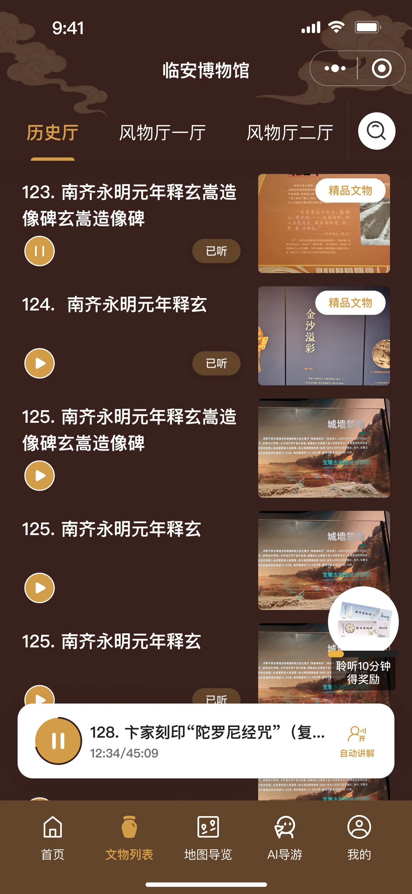
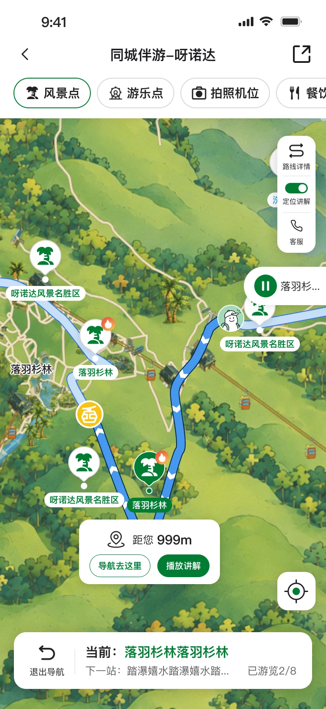
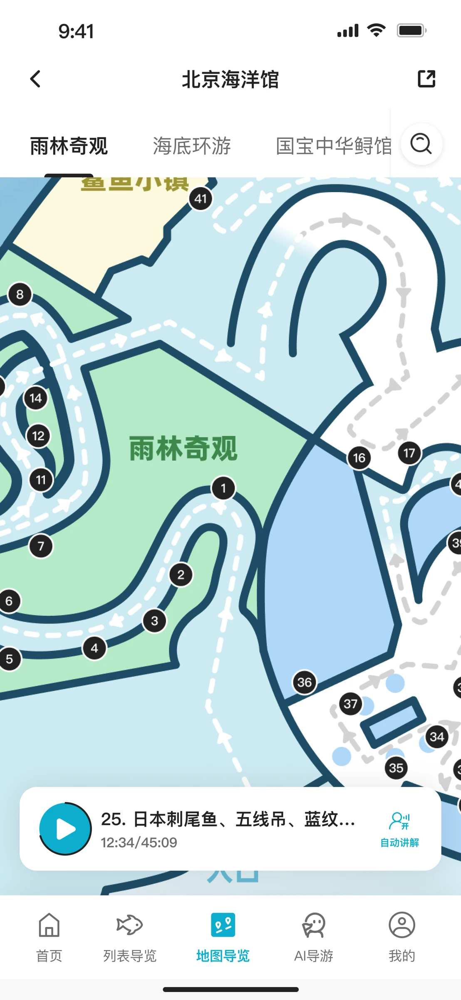
Interaction design · UI design
Selected product logic and requirements
Product · Engineering · Operations · Design
Collaborating on launch and iteration
July 2025 – present
Live and continuously evolving
Indoor and outdoor interaction models
Reusable components and design guidelines
Some partner attractions lacked digital guides. Building on the live Prince Kung’s Palace product, I redesigned the experience and developed interaction and UI approaches for large outdoor attractions and indoor venues. As the service expanded, the design also needed to accommodate each venue’s content and identity.
Large attractions have many paths and scattered points of interest. Visitors need to know where they are, where to go next, and whether they have covered everything included in their ticket.
Explore the outdoor solution ↗Features were hard to find, stories obscured navigation, and route guidance needed clearer directions and distances.
Organise information around the route, then focus navigation on the current stop, the next destination and overall progress.
01 / OUTDOOR EXPERIENCE
As the product expanded from Prince Kung’s Palace to Yanoda, Zhaoqing Xinghu and other large attractions, orientation and location became more important. I helped prioritise navigation information so visitors could keep their current task in view.
Most Yanoda visitors use package tickets. Instead of asking them to match their ticket to a route manually, I proposed recognising the package name and recommending an existing route, while retaining manual selection.
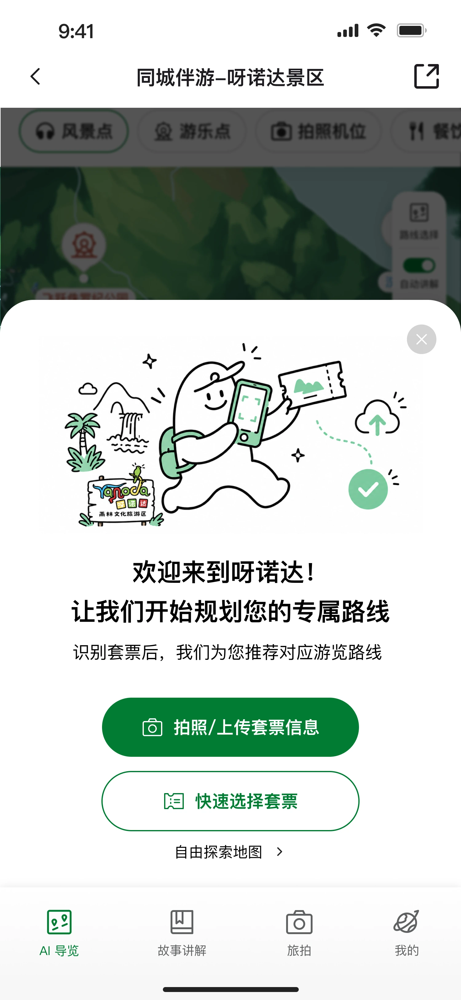
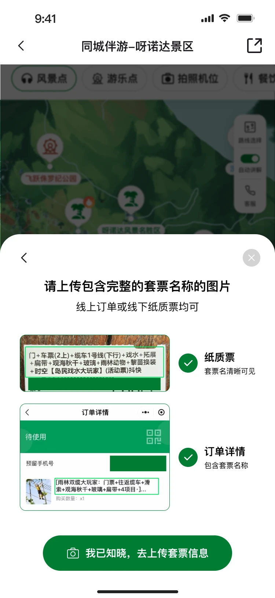
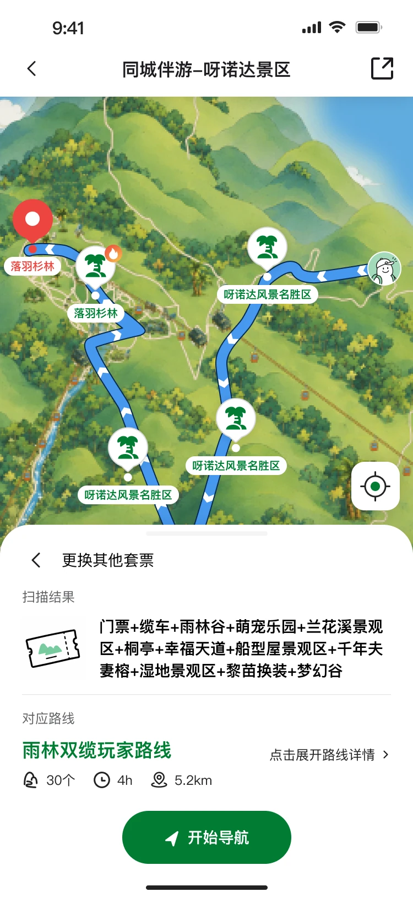
Examples of paper tickets and order screenshots help visitors upload a clear, complete package name. If recognition fails, they can upload again.
The failure rate fell by 3.8% in the first week after launch compared with the National Day holiday period. Whether this is a relative change or a percentage-point change remains unverified; further monitoring is needed.I proposed displaying route progress in the bottom card. We considered remaining time, but queuing, dwell time and walking pace vary widely. We ultimately measured progress by completed stops.
Show how many stops are complete,
without turning that into an unreliable time estimate.
The bottom card keeps the current stop, next destination and progress visible. A floating audio player lets visitors listen while using the map.
Cultural attractions retain stories and continuous playback. Large outdoor venues without relevant cultural stories omit this module.
DESIGN STARTS IN THE FIELD
When indoor design began, I visited the Haihunhou Museum to observe the exhibition environment and displays, then drew an indoor guide map based on the route and exhibit locations. This fieldwork provided spatial context for exhibit discovery and map navigation.
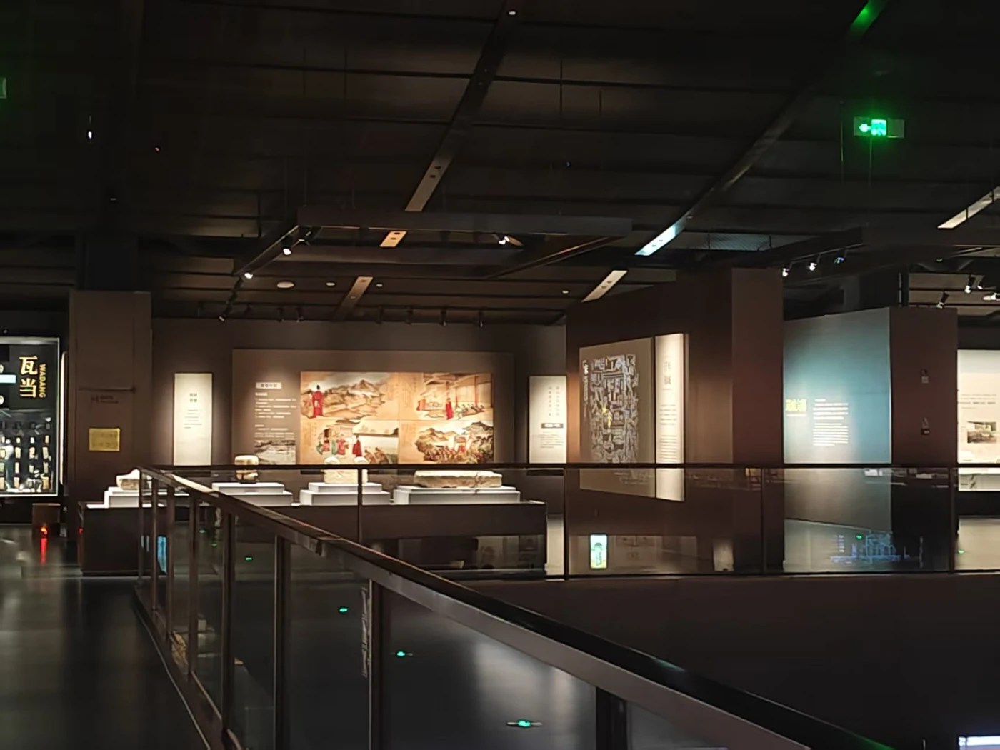
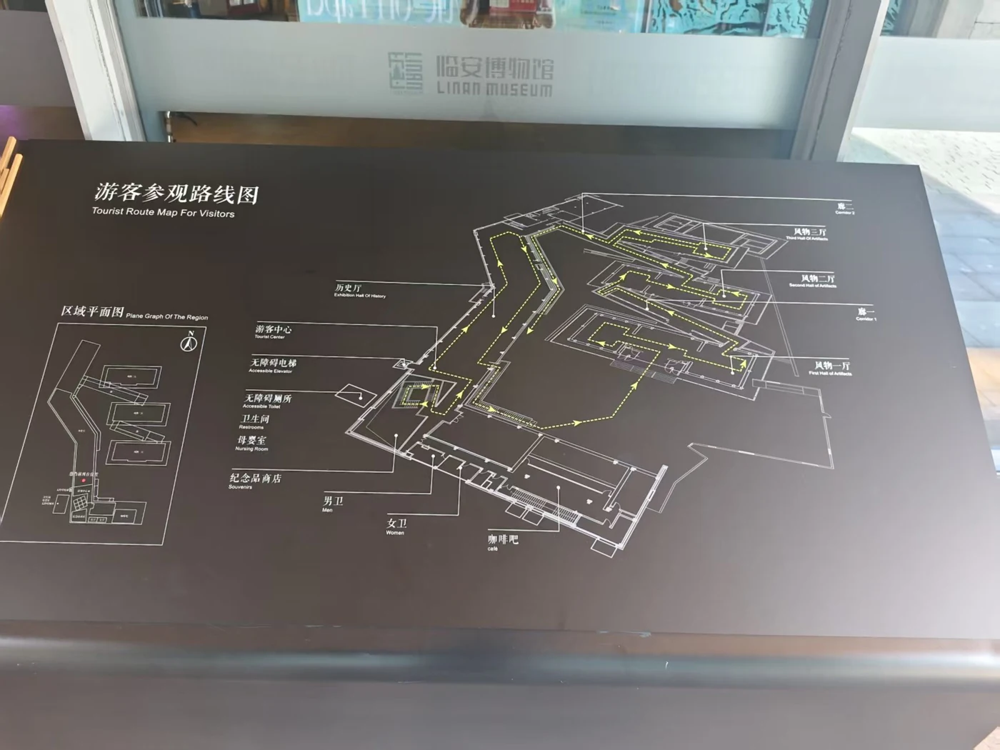
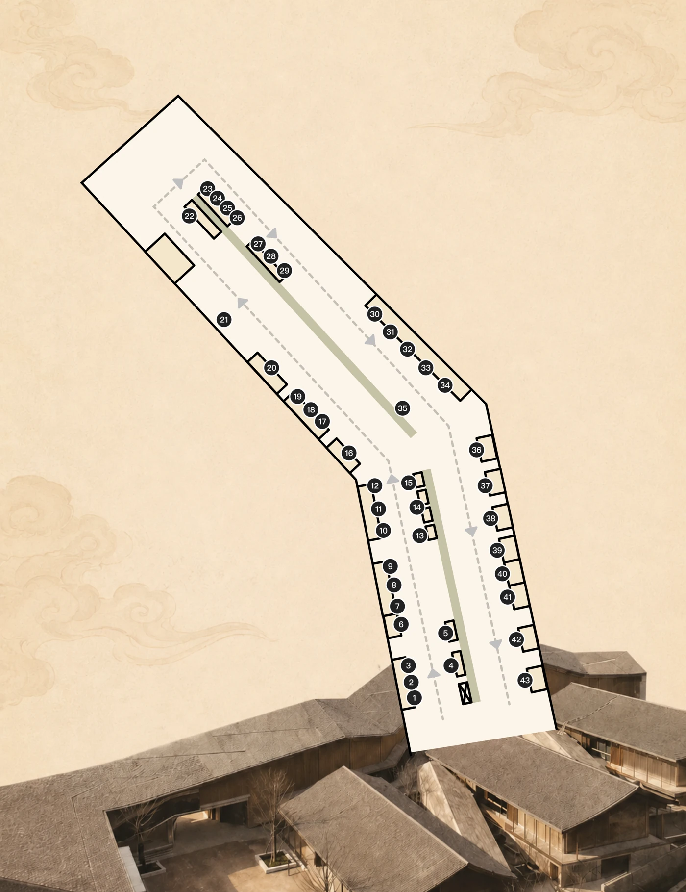
These are supplied research and map materials; the photographs are not attributed to a specific venue.
02 / INDOOR EXPERIENCE
Indoor visitors care about an exhibit’s history, details and stories. Physical labels did not use the same numbering as the product, so visitors mainly identified exhibits by name and photograph. Fuzzy name search became the primary discovery method.
Support ticket information, AI questions and other arrival needs.
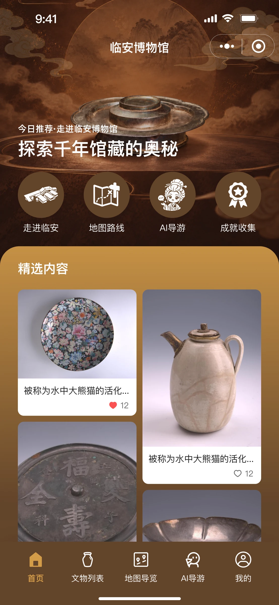
Find audio content from the exhibit’s location.
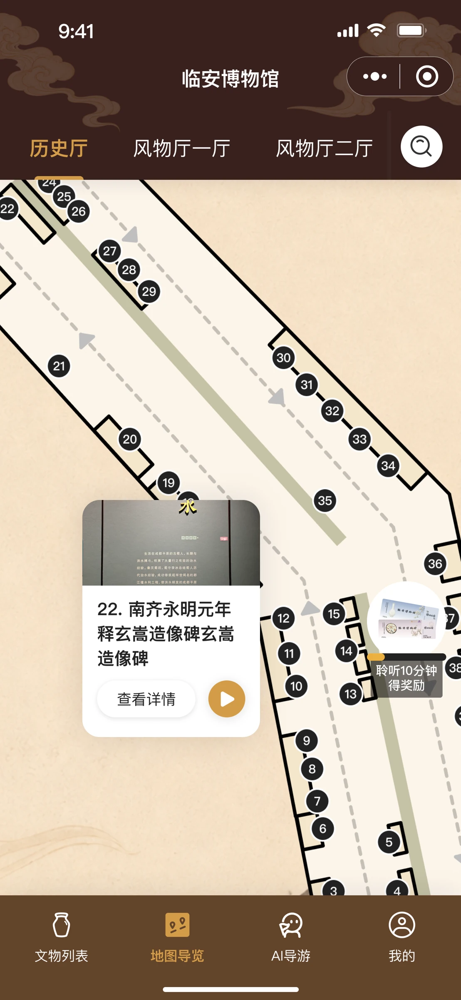
Opening a search result on the map switches galleries, pans to the exhibit and highlights it. Automatic narration follows the exhibit sequence, while visitors can switch content through either the map or the list.
Map numbers link content within the product. Highlighting an exhibit is not live indoor positioning.
Versions 1.0 to 2.0 focused on visual improvements. Visitor feedback showed that the first action was unclear and the list remained hidden behind an upward swipe. Version 3.0 separated map and list entry points while preserving their connection.
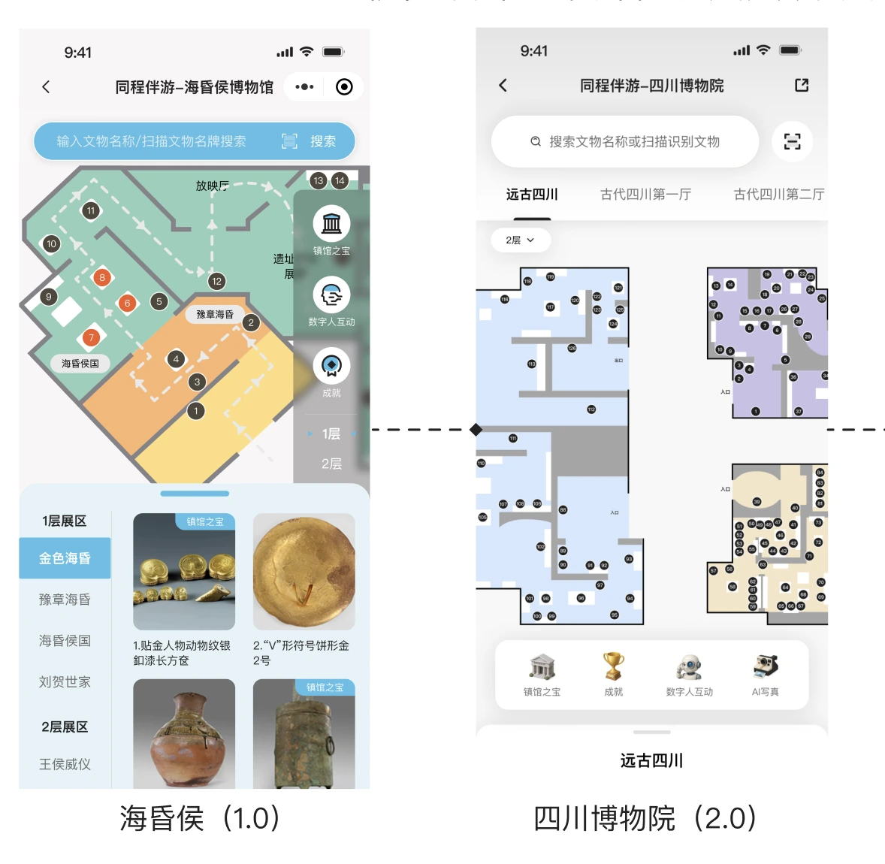
Version 1.0 displayed the map and list together, limiting map space. Version 2.0 drew on the map/list relationship in Airbnb search results to improve visuals and hierarchy, but the list remained hidden at the bottom.
Visitors first had to discover the upward swipe before they could understand how the list and map worked together.
Visitors can ask by text or voice, with image recognition available at some attractions. I designed input and waiting interactions, using an animated guide and a thinking indicator to communicate processing.
Text and voice input support questions during a visit.
Guide animation and a thinking indicator communicate that an answer is being prepared.
Answers remain in the conversation so visitors can ask follow-up questions.
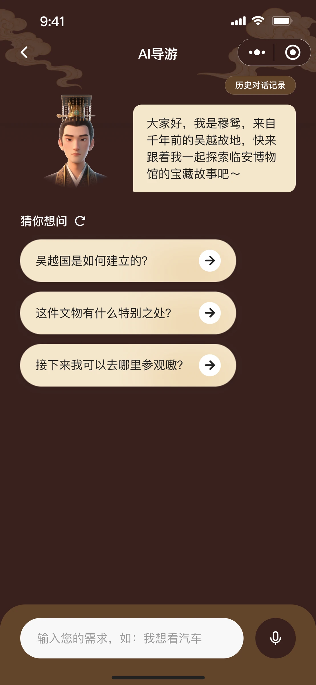
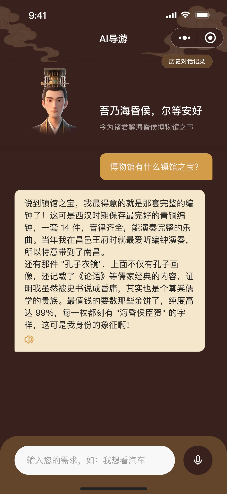
Static screens illustrate the interaction design; live answers and waiting animations are not simulated here.
03 / DESIGN AT SCALE
Lin’an Museum and the aquarium share the indoor guide structure. Colours, decorative motifs and homepage icons adapt to each venue. Operations configures galleries and exhibits, while maps are redrawn for the physical venue.
Exhibit discovery, map/list entry points and audio behaviour.
Theme colours, motifs, homepage icons and venue maps.
I organised foundations, business components, page templates and interaction states into design files to support future venue onboarding and handoff.
Colour / Type


Icons / Buttons / Player / Map markers

Cards / Overlays / Interaction rules

The project delivered indoor and outdoor interaction models, with components and guidelines for adapting the service to multiple venues.
Including 5 indoor venues and
10+ nationally rated 5A / 4A attractions.
Measured after all materials are ready. Without customisation, operations can onboard multiple venues in a day.
Design and development effort for custom work, based on project records and team estimates.
Onboarding time and customisation effort use different measures. Efficiency figures come from project records and team estimates.
Fieldwork showed me how visitors move between viewing exhibits, walking and using their phones. It helped me reconsider which entry points and information deserve priority.
Next, explore Bluetooth positioning at exhibit labels to connect location and narration more closely. This is still a planned direction, not a shipped outcome.